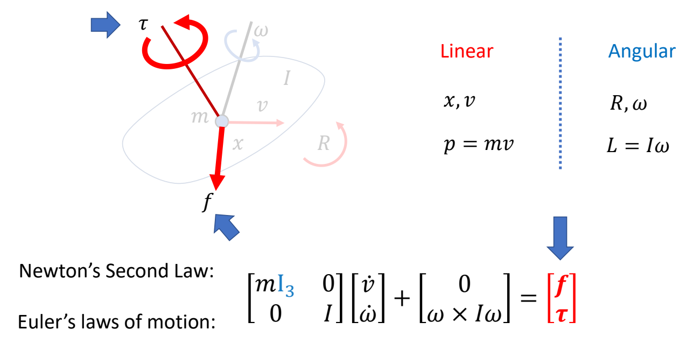
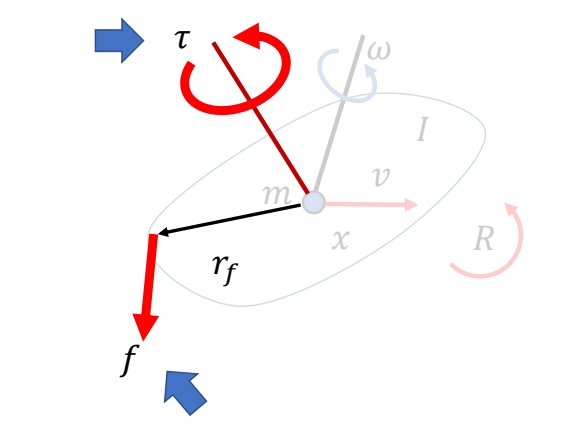
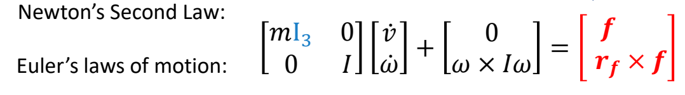
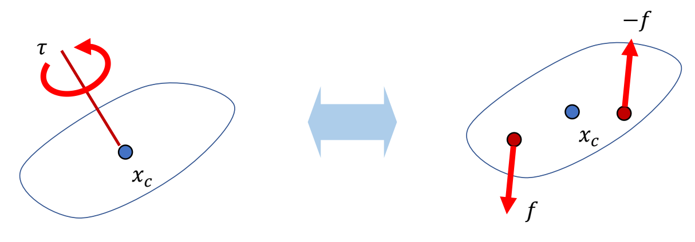
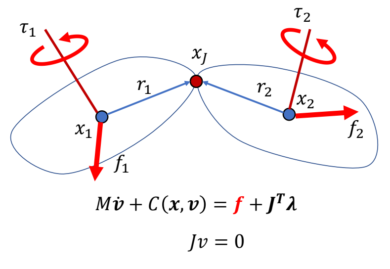
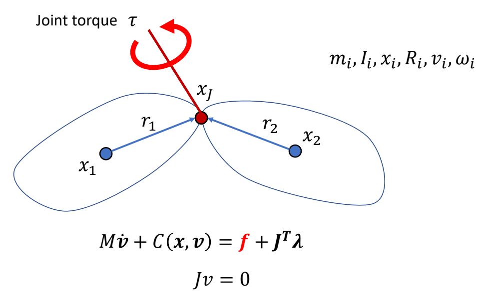
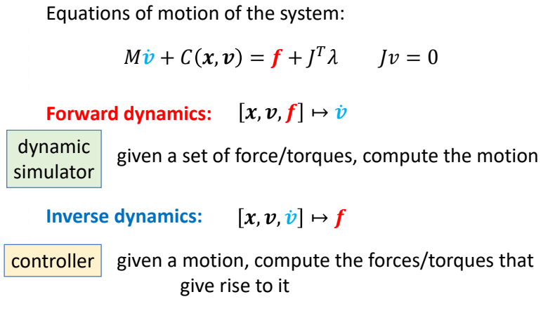

运动方程中的力与力矩
✅ 本章定位：澄清物理仿真运动方程中 力 和 力矩 的来源与含义。
一、力与力矩的作用效果
施加力/力矩会得到的效果
| 力加在质心上，只会导致平移，不会导致旋转。 |  |
| ✂ 在物体边缘施加力，等价于在质心施加力，并施加一个导致旋转的力矩。 |   |
| ✂ 在质心上施加一个力矩，等价于施加一对大小相同方向相反的力。在质心处的合力为零，不会产生位移，只会产生旋转。 ✂ 力矩只是数学上的概念。 |  |
怎么对角色产生效果
✂ 想让角色做指定动作，不能直接修改其状态，而是控制力影响状态。
| ✂ 为了驱动角色，可以单独对每个刚体施加力或力矩。 |  |
| ✂ 也可以在关节上施加力矩。 |  |
✂ 回顾前面公式，力和力矩都是施加在刚体上的，如何施加在关节上？
二、运动方程回顾
对于有 \(n\) 个刚体、\(m\) 个关节的角色系统，运动方程为：
$$ M\dot{v} + C(x,v) = f_{\text{ext}} + f_{\text{joint}} + J^T\lambda $$
$$ Jv = 0 $$
方程中有三个力/力矩项，它们的来源和含义完全不同：
| 项 | 名称 | 来源 | 是否主动 |
|---|---|---|---|
| \(f_{\text{ext}}\) | 外力 | 外部环境 | 被动 |
| \(f_{\text{joint}}\) | 关节力矩 | 控制器 | 主动 |
| \(J^T\lambda\) | 约束力 | 约束求解器 | 被动 |
三、外力 (f_{\text{ext}})
定义
外力 是来自角色外部的力，包括：
| 外力类型 | 说明 | 计算公式 |
|---|---|---|
| 重力 | 地球引力 | \(f_g = m \cdot g\) |
| 风力 | 环境气流 | 经验模型 |
| 接触力 | 地面/物体的支撑力 | 由接触模型计算 |
| 摩擦力 | 接触面的切向阻力 | \(f_t = -\mu f_n \frac{v_{\parallel}}{|v_{\parallel}|}\) |
外力的效果
外力作用在刚体上，会同时产生两种效果：
外力 f
↓
┌───────┐
│ 刚体 │ ← 质心
└───────┘
↑
r (作用点距离质心)
平移效果（无论作用在哪里）： $$ a = \frac{f_{\text{ext}}}{m} $$
旋转效果（仅当不经过质心时）： $$ \tau_{\text{ext}} = r \times f_{\text{ext}} $$
✅ 关键：外力产生的力矩 \(\tau_{\text{ext}}\) 已经包含在 \(f_{\text{ext}}\) 中，不需要单独列一项。
重要性质
| 性质 | 说明 |
|---|---|
| 被动性 | 外力不由控制器决定，由物理环境决定 |
| 无控制器时仍存在 | Ragdoll 只受外力，也会运动 |
| 力矩在 \(f_{\text{ext}}\) 中 | 外力不经过质心产生的力矩，算在 \(f_{\text{ext}}\) 里 |
四、关节力矩 (f_{\text{joint}})
定义
关节力矩 是控制器生成的主动控制输入，用于驱动角色运动：
$$ f_{\text{joint}} = \begin{bmatrix} 0 & \tau_1 & 0 & -\tau_1 & \cdots \end{bmatrix}^T $$
来源
| 来源 | 说明 |
|---|---|
| 肌肉收缩 | 生物角色的肌肉产生力矩 |
| 电机驱动 | 机器人关节的电机产生力矩 |
| 控制器输出 | PD 控制、强化学习策略等 |
施加方式
关节力矩 \(\tau\) 作用在关节连接的两个刚体上：
τ (子刚体)
┌────┐
│前臂│ ← 子刚体
└────┘
↖
手肘关节
┌────┐
│上臂│ ← 父刚体
└────┘
-τ (父刚体)
规则：
- 在子刚体上加 \(\tau\)
- 在父刚体上加 \(-\tau\)
- 合力为零：\(\tau + (-\tau) = 0\)（满足牛顿第三定律）
关节力矩的效果
关节力矩只产生纯旋转，不产生平移：
$$ \alpha = I^{-1}\tau $$
✅ 与外力的区别：外力同时产生平动和转动，关节力矩只产生转动。
重要性质
| 性质 | 说明 |
|---|---|
| 主动性 | 由控制器主动生成 |
| 无控制器时为零 | Ragdoll 的 \(f_{\text{joint}} = 0\) |
| 不在 \(f_{\text{ext}}\) 中 | 关节力矩是独立项 |
| 外力不产生关节力矩 | 即使外力不经过质心，产生的力矩也在 \(f_{\text{ext}}\) 中，不在 \(f_{\text{joint}}\) 中 |
五、两种力矩的对比
外力产生的力矩 vs. 关节力矩
| 维度 | 外力产生的力矩 \(\tau_{\text{ext}}\) | 关节力矩 \(\tau_{\text{joint}}\) |
|---|---|---|
| 来源 | 外力不经过质心 | 控制器生成 |
| 在方程中的位置 | \(f_{\text{ext}}\) 中（通过 \(r \times f\) 计算） | \(f_{\text{joint}}\) 中 |
| 是否需要控制器 | 否（Ragdoll 也有） | 是（无控制器则为 0） |
| 物理本质 | 被动力矩 | 主动控制输入 |
| 例子 | 重力让手臂自然下垂 | 主动抬手 |
直观类比
| 场景 | 力矩来源 | 在方程中的位置 |
|---|---|---|
| 风吹门 | 风力不经过质心 | \(f_{\text{ext}}\) |
| 你推门 | 手施加的力矩 | \(f_{\text{joint}}\) |
六、无控制器时的情况（Ragdoll）
运动方程
当没有控制器时：
$$ f_{\text{joint}} = 0 $$
方程简化为：
$$ M\dot{v} + C(x,v) = f_{\text{ext}} + J^T\lambda $$
为什么 Ragdoll 的关节会旋转？
即使 \(f_{\text{joint}} = 0\)，Ragdoll 仍然会运动，原因是：
- 外力（重力）作用在每个刚体上
- 外力不经过质心时产生力矩（在 \(f_{\text{ext}}\) 中）
- 关节约束限制刚体不分离，但允许绕关节旋转
- 结果：刚体绕关节被动旋转
被动旋转 vs. 主动旋转
| 旋转类型 | 来源 | 方程中的项 | 例子 |
|---|---|---|---|
| 被动旋转 | 外力产生的力矩 | \(f_{\text{ext}}\) | Ragdoll 倒下、手臂自然摆动 |
| 主动旋转 | 关节力矩 | \(f_{\text{joint}}\) | 主动抬手、走路摆臂 |
七、总结
关键要点
-
\(f_{\text{ext}}\)（外力）：
- 来自外部环境（重力、风力、接触力）
- 包含外力产生的力矩（\(r \times f\)）
- 无控制器时仍然存在
-
\(f_{\text{joint}}\)（关节力矩）：
- 来自控制器（肌肉、电机）
- 只包含控制器主动生成的力矩
- 不包含外力产生的力矩
- 无控制器时为零
-
外力产生的力矩永远在 \(f_{\text{ext}}\) 中，与 \(f_{\text{joint}}\) 无关。
一张表理解
$$ \begin{array}{c|c|c} \text{项} & \text{包含什么} & \text{无控制器时} \ \hline f_{\text{ext}} & \text{外力 + 外力产生的力矩} & \text{仍然存在} \ f_{\text{joint}} & \text{仅控制器生成的关节力矩} & 0 \ J^T\lambda & \text{约束力求解结果} & \text{仍存在（维持约束）} \ \end{array} $$
本文出自 CaterpillarStudyGroup，转载请注明出处。 https://caterpillarstudygroup.github.io/GAMES105_mdbook/
八、前向动力学与后向动力学
Forward Dynamics vs. Inverse Dynamics

✂ 运动方程，本质上是建立力与加速度之间的联系。 ✂ 前向与后向，是一个运动方程的两种用法。 ✂ 仿真器为前向部分，控制器为逆向部分。
前向动力学（Forward Dynamics）
已知：力/力矩 \(f, \tau\)
求解：加速度 \(\dot{v}\)
$$ \dot{v} = M^{-1}(f_{\text{ext}} + f_{\text{joint}} + J^T\lambda - C(x,v)) $$
用途：
- 物理仿真器
- 给定控制输入，预测角色会如何运动
后向动力学（Inverse Dynamics）
已知：加速度 \(\dot{v}\)（期望的运动）
求解：力/力矩 \(f, \tau\)
$$ f_{\text{joint}} = M\dot{v} + C(x,v) - f_{\text{ext}} - J^T\lambda $$
用途：
- 控制器设计
- 给定目标运动，计算需要的关节力矩
对比
| 前向动力学 | 后向动力学 | |
|---|---|---|
| 已知 | 力/力矩 | 加速度（期望运动） |
| 求解 | 加速度 | 力/力矩 |
| 用途 | 仿真器 | 控制器 |
| 问题类型 | 正向问题 | 逆向问题 |
✅ 关键：前向和后向是同一个运动方程的两种用法，只是已知量和求解量不同。